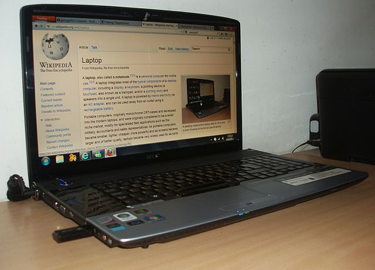

Laptop alebo notebook je označenie pre stredne ťažké prenosné počítače s integrovanou základnou jednotkou, monitorom
a klávesnicou; podrobnosti pozri v nasledovnej časti Definície.
Definícia:
Podľa viacerých zdrojov [1][2] bol prvým notebookom NEC UltraLite, ktorý bol predstavený na výstave COMDEX v októbri
1988 v New Yorku.
Pri jeho uvedení v roku 1988 bol označovaný ako "laptop" [3] avšak už v roku 1989 bol prirovnávaný k notebooku (slovensky:
zápisník) [4], na čo nadväzovala aj jeho neskoršia propagácia [5].
NEC Ultralite vážil aj s baterkami 5 libier, teda 2,268 kg a stál okolo 3 000 dolárov.
Pojem notebook spopularizovala v rovnakom období firma Toshiba ako marketingové označenie pre svoje hmotnostne ľahšie
výrobky, aby sa tak odlíšili od starších, ťažších nazývaných laptop.
Názov pochádza z toho, že počítač je taký malý, že sa rozmermi podobá na zápisník poznámok (anglicky: notebook)
veľkosti približne rozmeru A4.
Výraz sa veľmi rýchlo ujal a došlo k pokusom odlíšiť notebook od pojmu laptopu aj na základe technických kritérií,
napr.:
notebook na rozdiel od laptopu neponúka všetky funkcie, alebo, notebook má sloty na PCMCIA karty, laptop na ISA/EISA
karty, alebo, notebook má vlastnú batériu, laptop nemusí mať.
Nakoniec sa (tak ako to bolo pôvodne aj myslené) ale presadilo veľkostné a váhové kritérium. Za notebook (v užšom
zmysle slova) teda považujeme prenosný počítač s hmotnosťou do 3 (4) kg, ktorý má integrovanú základnú jednotku, LCD
monitor a klávesnicu do jedného celku (podľa niektorých zdrojov okrem tablet PC).
Niekedy sa ako kritérium uvádzajú (aj alebo alternatívne) rozmery: notebook má mať rozmery maximálne približne formátu
A4 a hrúbku niekoľko centimetrov.
Hoci to na definícii notebooku ako takého nič nemení, niektoré zdroje formálne považujú notebook za podtyp laptopu
(pozri vyššie laptop v širšom zmysle), iné za samostatný typ prenosného počítača (pozri vyššie laptop v užšom zmysle).
V prvom prípade sú teda dnešné notebooky zároveň laptopmi, v druhom prípade sa laptopy v prvej polovici 90. rokov
prakticky prestali vyrábať.
Napokon treba dodať, že niekedy sa pojem notebook (v širšom zmysle) považuje jednoducho za synonymum pojmu laptop
(v širšom zmysle).
Ale vzhľadom na to, že dnes má veľká väčšina laptopov (v širšom zmysle) podobu notebooku (v užšom zmysle), je ťažko
rozlíšiť či ide o úplné synonymá alebo len výsledok faktu, že dnes sú na trhu prakticky len notebooky (v užšom zmysle).
